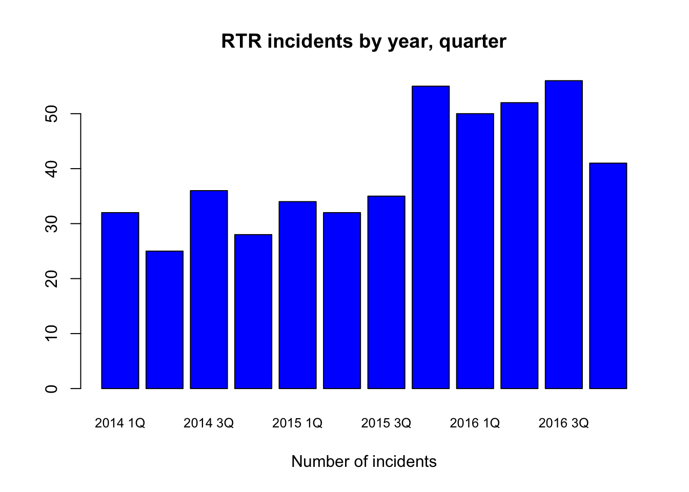
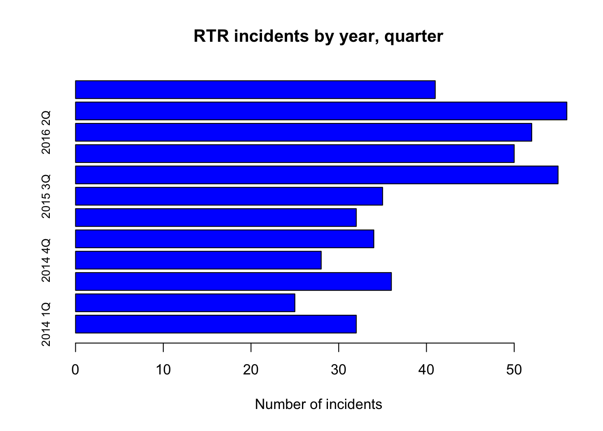
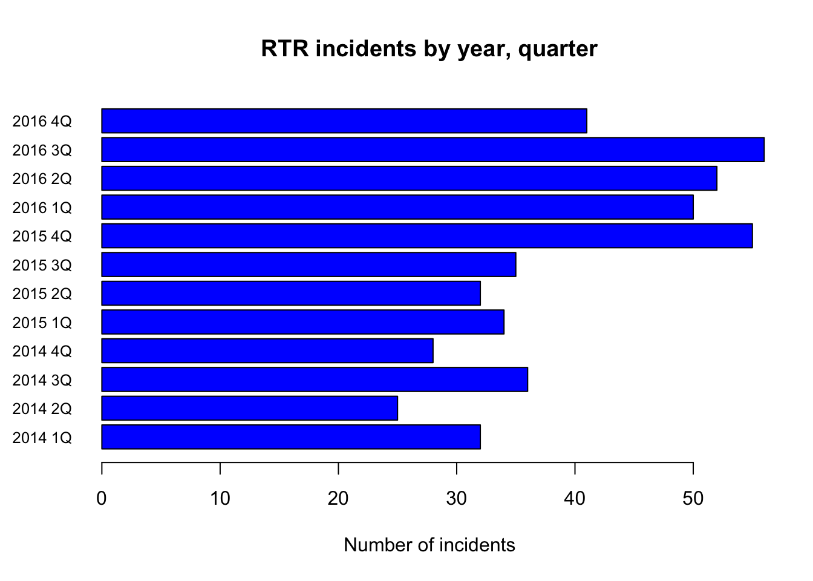
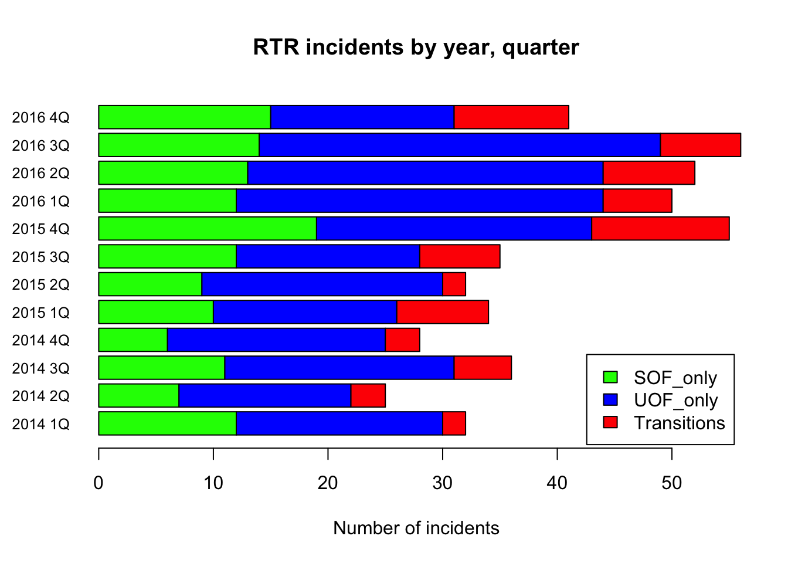
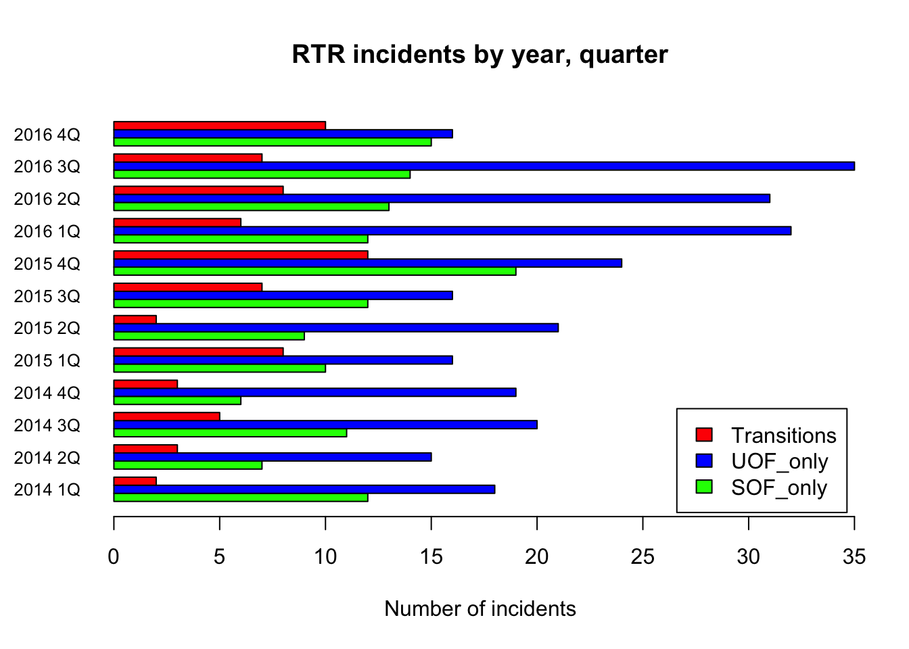

We’re going to create three different types of bar charts with the Elgin Response to Resistance data.
First we load the readr library and then the dataset.
library(readr)
df <- read_csv("dfCrime.csv")## Parsed with column specification:
## cols(
## Year_Quarter = col_character(),
## year = col_integer(),
## quarter = col_character(),
## Total_CFS = col_integer(),
## Total_arrests = col_integer(),
## Total_RTR = col_integer(),
## SOF_only = col_integer(),
## UOF_only = col_integer(),
## Transitions = col_integer()
## )Now let’s use summary() to remind us of what the data is
summary(df)## Year_Quarter year quarter Total_CFS
## Length:12 Min. :2014 Length:12 Min. :18178
## Class :character 1st Qu.:2014 Class :character 1st Qu.:19663
## Mode :character Median :2015 Mode :character Median :21544
## Mean :2015 Mean :21341
## 3rd Qu.:2016 3rd Qu.:22753
## Max. :2016 Max. :24715
## Total_arrests Total_RTR SOF_only UOF_only
## Min. : 889.0 Min. :25.00 Min. : 6.00 Min. :15.00
## 1st Qu.: 947.8 1st Qu.:32.00 1st Qu.: 9.75 1st Qu.:16.00
## Median : 994.5 Median :35.50 Median :12.00 Median :19.50
## Mean :1013.2 Mean :39.67 Mean :11.67 Mean :21.92
## 3rd Qu.:1046.2 3rd Qu.:50.50 3rd Qu.:13.25 3rd Qu.:25.75
## Max. :1246.0 Max. :56.00 Max. :19.00 Max. :35.00
## Transitions
## Min. : 2.000
## 1st Qu.: 3.000
## Median : 6.500
## Mean : 6.083
## 3rd Qu.: 8.000
## Max. :12.000Three years with four quarters each of response-to-resistance (RTR) incidents from the Elgin police department. That’s broken down by the type of response - show of force only, use of force only and transition - show to use of force.
Let’s generate a bar plot of the total RTR incidents
barplot(df$Total_RTR,
names.arg = df$Year_Quarter, cex.names=0.8,
main="RTR incidents by year, quarter",
xlab = "Number of incidents",
col="blue")
Right off the bat, there’s a problem. There aren’t labels below for each bar, and which label applies to which bar isn’t immediately clear.
If you’re going to do graphics, not just for yourself but others, you’re going to have to pay attention to these kinds of aesthetics.
There’s a lot of ways to address this, but the easiest is by making this a horizontal bar chart. We do this by adding the command horiz=TRUE
barplot(df$Total_RTR,
horiz=TRUE,
names.arg = df$Year_Quarter, cex.names=0.8,
main="RTR incidents by year, quarter",
xlab = "Number of incidents",
col="blue")
And that’s worse. We need to change the parameters of our plots so the axis text is horizontal too. We do that using the par command.
For more information on par, use the help method ?par
par(las=1)
barplot(df$Total_RTR,
horiz=TRUE,
names.arg = df$Year_Quarter, cex.names=0.8,
main="RTR incidents by year, quarter",
xlab = "Number of incidents",
col="blue")
barplot( is the command to make bar plots
df$Total_RTR is the column we want to plot
horiz=TRUE creates a horizontal plot
names.arg are the labels for the bars, cex makes them a bit smaller.
main and xlab are obvious. col is the color to use for the bars.
Sorting is automatic. There are ways to sort the data differently in a basic plot like this differently, but they’re very complicated.
In addition to the total RTR, we have each quarter broken down by the type of response. A stacked bar plot would be very useful for this.
But first, we have to load only the data we want into a matrix and then transpose it.
counts2 <- matrix(c(df$SOF_only,df$UOF_only,df$Transitions),ncol=3)
colnames(counts2)=c("SOF_only","UOF_only","Transitions")
rownames(counts2)=df$Year_Quarter
counts2## SOF_only UOF_only Transitions
## 2014 1Q 12 18 2
## 2014 2Q 7 15 3
## 2014 3Q 11 20 5
## 2014 4Q 6 19 3
## 2015 1Q 10 16 8
## 2015 2Q 9 21 2
## 2015 3Q 12 16 7
## 2015 4Q 19 24 12
## 2016 1Q 12 32 6
## 2016 2Q 13 31 8
## 2016 3Q 14 35 7
## 2016 4Q 15 16 10counts2 <- matrix( takes the list of the columns we want, creates a matrix and puts them into counts2. ncol=3 specifies the number of columns in the matrix.
colnames(counts2) assigns names to the columns
rownames(counts2) assigns names to the rows from the Year_Quarter column.
Now we need to transpose it.
counts <- t(counts2)
counts## 2014 1Q 2014 2Q 2014 3Q 2014 4Q 2015 1Q 2015 2Q 2015 3Q
## SOF_only 12 7 11 6 10 9 12
## UOF_only 18 15 20 19 16 21 16
## Transitions 2 3 5 3 8 2 7
## 2015 4Q 2016 1Q 2016 2Q 2016 3Q 2016 4Q
## SOF_only 19 12 13 14 15
## UOF_only 24 32 31 35 16
## Transitions 12 6 8 7 10Compare counts2 to counts to see the difference.
Now we can plot
par(las=1)
barplot(counts, horiz=TRUE, cex.names=0.8,
main="RTR incidents by year, quarter",
xlab = "Number of incidents",
col=c("green","blue","red"),
legend = rownames(counts),
args.legend = list(x ='bottomright', inset=0.01)
)
barplot needs the par command to turn the axis labels. Generally you only need this once in a file.
legend adds a legend based on the row names. Remember, we transposed the matrix so the columns became our rows.
args.legend places the legend at the bottom right, inset nudges it over a bit.
Try swapping in Counts2 instead of counts to see what happens.
The only difference between a stacked and a grouped bar plot is adding the beside=TRUE command.
par(las=1)
barplot(counts, horiz=TRUE, cex.names=0.8,
beside=TRUE,
main="RTR incidents by year, quarter",
xlab = "Number of incidents",
col=c("green","blue","red"),
legend = rownames(counts),
args.legend = list(x ='bottomright', inset=0.01)
)
Aesthetically, you need to decide which is better - stacked or grouped. For this data, stacked is more appropriate since the data add up to a total.
But if you’re comparing two completely different measures over time, then grouped would be best.